d140502
nfoWorks
devNote
Annotating
XML Documents
Create Baseline HTML Replicas
|
|
d140502
nfoWorks
devNote |
0.03 2017-06-14 20:22 |
- Latest version of Annotating XML Documents: available on the Internet at
<http://nfoWorks.org/dev/2014/05/d140502b.htm>
- This Create Baseline HTML Replicas version is available at <http://nfoWorks.org/dev/2014/05/d140502e.htm>.
The derivation of an HTML rendition of an XML document is complicated by the fact that the XML document has characters with special significance in HTML. In addition, HTML does not preserve whitespace as written in the XML document. It is necessary to make adjustments for preserving spaces and line breaks and also "escape" XML document characters "&", "<", and ">" so they appear literally without recognition as HTML-significant special codes.
It is also a bit complicated to convert the plaintext line-number fields to HTML fields that render as permalinks having the line number as text.
The entire process can be accomplished with scripts and small programs, as is also the case for creation of a baseline plaintext replica. All of the steps can be automated. Here, a manual procedure is used to demonstrate "by hand" what the critical steps are for any automation.
The procedure given here is a continuation of the manual procedure already-provided for creating baseline plaintext replicas. The same XML document is used by way of example [n140504b3]..The examples begin with the Microsoft Office 2013 Excel spreadsheet that is a by-product of the plaintext replica procedure [n140504d2].
The objective is simple: Provide an HTML text that renders the same as the plaintext rendition (e.g., [n140504d1]), but with the line-number fields replaced by permalinks to those very lines. Any further annotation is accomplished by editing the baseline HTML replica using appropriate tools.
This procedure illustrates two variations for HTML. The simplest is a version that is preformatted and must be included in HTML <pre> elements in order to present with the original whitespace, including line breaks, as illustrated by [n140504d5]. The second is a version that is ordinary HTML for inclusion in HTML <p> (and equivalent) elements, with space and line breaks preserved using special HTML markup, as illustrated by [n140504d6].
1. Prerequisites
2. The Starting Point
3. Adding More Line-Numbering Columns
4. Preserve the XML Text in HTML
5. Choose Between Pre-Formatted and Ordinary HTML
6. Preserve White Space for Ordinary HTML
7. Create the Permalinks
8. Wrapping-Up the HTML
9. References
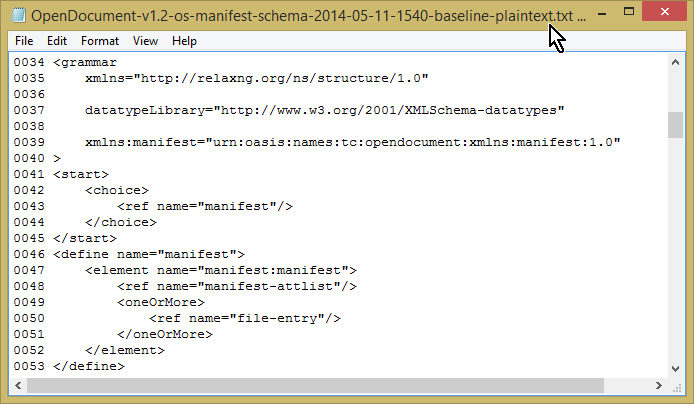
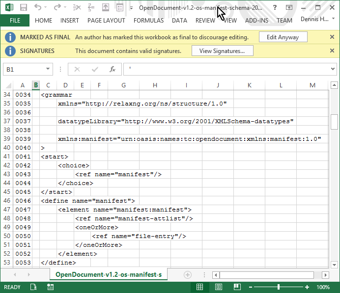
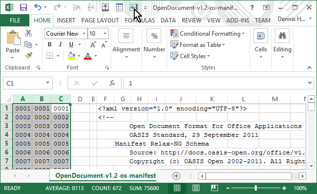
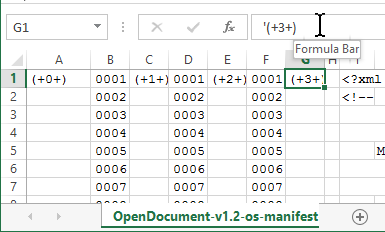
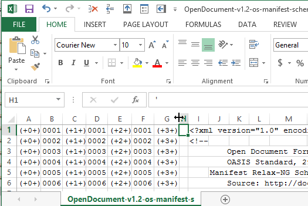
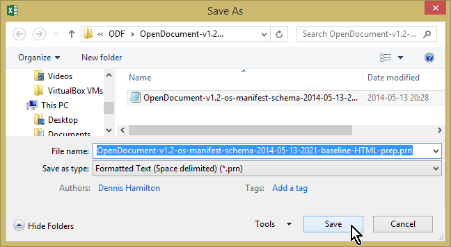
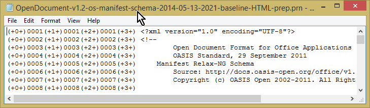
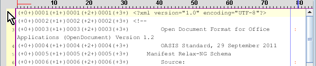
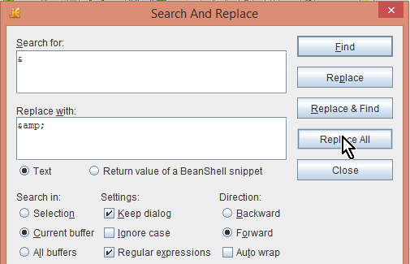
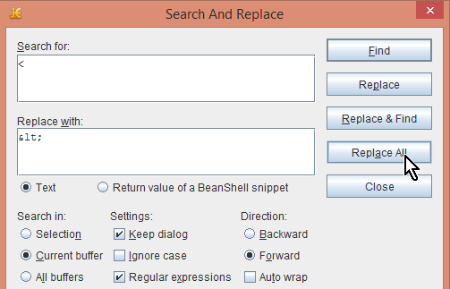
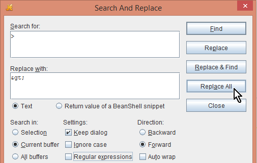
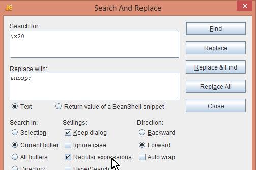
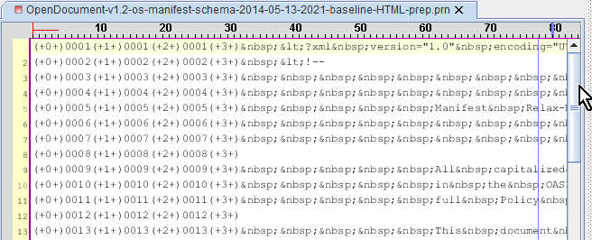
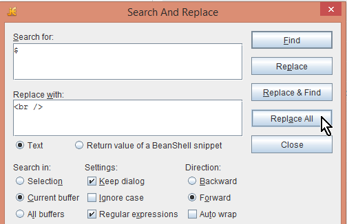
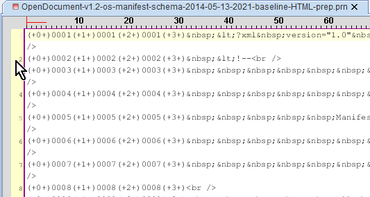
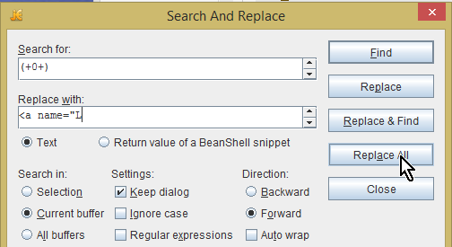
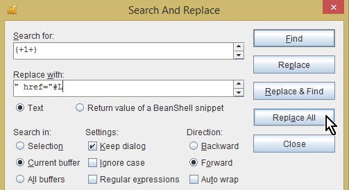
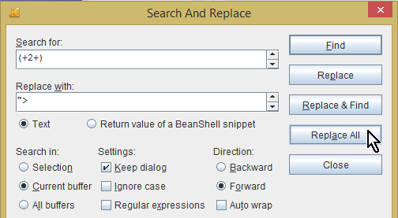
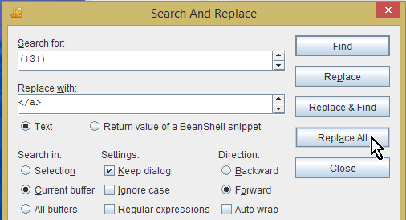
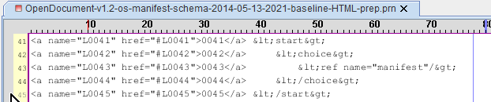
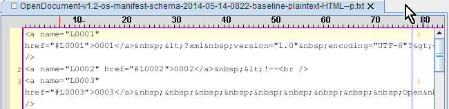
- [n140504b3]
- OASIS Open. Open Document v1.2 Manifest Schema. Part of OpenDocument Format for Office Applications (OpenDocument) Version 1.2. 29 September 2011 OASIS Standard. Schema file OpenDocument-v1.2-os-manifest-schema.rng dated 2011-09-29 is available at <http://docs.oasis-open.org/office/v1.2/os/>. The version used simply has .txt added to the end of the file name, with no other modifications.
- [n140504d1]
- Hamilton, Dennis E. Open Document v1.2 Manifest Schema plaintext replica. Derived from n140504d2 on 2014-05-11. This is an exact replica with a line-numbering column at the beginning of each of the original 224 lines.
- [n140504d2]
- Hamilton, Dennis E. Open Document v1.2 Manifest Schema plaintext replica spreadsheet. Derived from n140504b3 on 2014-05-11. This Microsoft Office 2013 Excel spreadsheet is the edited form from which n140504d1 was produced.
- [n140504d3]
- Hamilton, Dennis E. OpenDocument v1.2 Manifest Schema HTML replication preparation spreadsheet. Derived from [n140504d2] on 2014-05-13. This Microsoft Office 2013 Excel spreadsheet is the form described in Section 3 and from which [n140504d4] is produced..
- [n140504d4]
- Hamilton, Dennis E. OpenDocument v1.2 Manifest Schema baseline HTML replica preparation plaintext. Derived directly from [n140504d3] on 2014-05-13. This plaintext file is the basis for transformation into HTML forms with self-permalinks at the line-number entries. It is produced as the final step of the procedure in Section 3.
- [n140504d5]
- Hamilton, Dennis E. OpenDocument v1.2 Manifest Schema baseline HTML preformatted replica. Derived from [n140504d4] on 2014-05-13. This has all of the changes except for those in Section 6, thereby retaining the original white-space in the text.
- [n140504d6]
- Hamilton, Dennis E. OpenDocument v1.2 Manifest Schema baseline ordinary HTML replica. Derived from [n140504d4] on 2014-05-14. This version results from all of the steps in the procedure here, having the original white-space preserved in ordinary HTML via presence of character entities and <br /> line-break elements.
- Hamilton, Dennis E.
- Annotating XML Documents: Create Baseline HTML Replicas. nfoWorks devNote page d140502e 0.02 May 28, 2014. Accessed at <http://nfoWorks.org/dev/2014/05/d140502e.htm>.

|
created 2014-05-12-15:07 -0700 (pdt) |